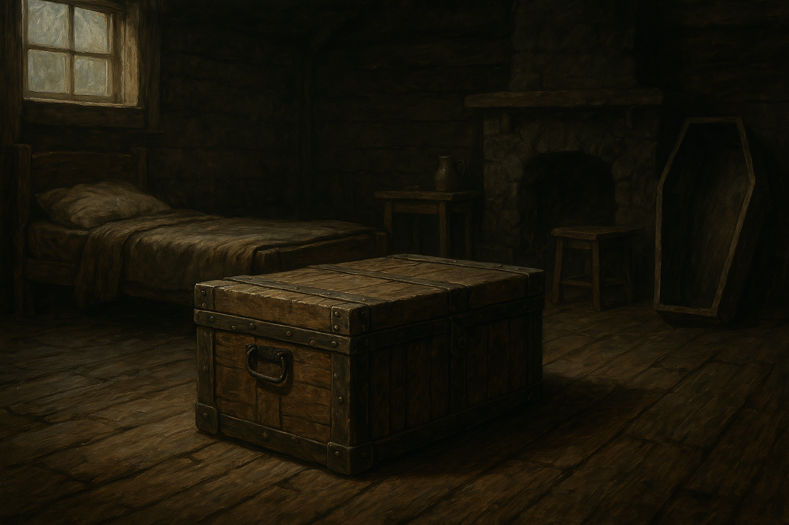

Chapter 3: Invitation to T.I.D.E.S.
The Elite Bloodline


The Elite Bloodline
15049.03.17
擊敗了骷髏後，冒險者們決定先在小木屋過夜，隔天再回爵士家。小木屋內只有一張床，羅羅率先佔領了那張床。同時，阿龍開始翻找爵士信中提到的「寶物」到底在什麼地方。他發現在床底下有個很大的木箱，於是連同床上的羅羅，將床搬起。在大家的合作下，終於將木箱搬了出來。
木箱上沒有明顯的鎖或是能夠撬開的地方，在各種嘗試都失敗後，冒險者決定隔天直接將箱子搬回去，畢竟信中只有提到要把寶物帶回，並沒有要求要打開。
除了羅羅外，大家基本上沒有地方可以睡。雷亞走到房外，將一個空的棺材搬入小木屋內，躺進去後便開始睡了。阿龍將木箱搬到鑰的推車上後，靠著推車睡了。鑰倚著木箱也睡了，松鼠則睡在他身邊。毛毛率先守夜。
整夜大家輪流守夜，也發生了一些小插曲。
阿龍守夜時，因為想到剛才聽到海妖的歌聲傳入耳中受到影響，於是趁著毛毛睡著時從他的腿上砍下了一點毛，嘗試做成耳塞。在他砍下第二刀時，毛毛醒了，對此十分不爽。於是阿龍改為對松鼠下手。在松鼠被砍下毛時，他大聲尖叫後便昏倒了，因此鑰也被驚醒了。經過鑰的指點，阿龍才意識到放在毛毛頸部底下的枕頭內其實就有足夠的棉花可以做成耳塞。鑰也將松鼠抱在懷裡，以免他再受到任何襲擊。
輪到雷亞守夜時，閒著的他跑到外面，將裝有骷髏的棺材一個一個排好，並整理好裡面的骷髏，整整齊齊，他認為這是榮耀涅西斯的一種表現。
羅羅守夜時，則在骷髏堆中找到了兩把用過的短刀，他打算隔日帶回城鎮中賣掉，換點錢。
15049.03.18
天亮後，冒險者們吃過早餐，便出發下山。大家分工搬著箱子，大約中午時便回到了爵士家。
僕人見到他們把箱子帶回來，感到十分驚訝，在大家點完自己要吃的食物後，僕人便出發去採買了。見到在客廳還是失智的巴托斯爵士，大家將箱子拿到爵士面前，也不確定到底期望看到什麼。誰知，爵士伸出手後，盒子發出了亮光，蓋子飄了起來，掉落在地上。盒子內是空的。冒險者們發愣之際，爵士竟然開口說話了。
冒險者們非常驚訝，這個「失智」的爵士，怎麼突然說起話來，甚至還能從輪椅上站起來。冒險者們趕緊向爵士詢問，得知他過去是T.I.D.E.S.的高層之一，現在由他的女兒萊里接替，而這個組織的高層可以與智慧之神喬里森溝通。阿龍得知自己信仰的喬里森竟然同時也是智慧之神，內心瞬間充滿了自信。說起獎賞，爵士便走到宅邸後方的小房間，拿了一個小盒子回來，裡面有五個不同顏色的戒指，讓冒險者們一一挑選。
冒險者們問題還沒問完，卻發現坐回輪椅上的爵士竟然開始石化，一時間內便再也沒有動靜了。此時僕人剛好買完食物回來，雖然相信冒險者們的說詞，卻也不知道該怎麼辦。大家吃著僕人買回來的雞腿、魚和其他各種食物，同時讀著僕人從大門口門縫撿到的紙條。
經過了一些時間，他們拼湊出了兩條訊息：「15049年3月18日23:59」，以及「貝瑟頓第1410頁書店T.I.D.E.S.馬車」。冒險者們決定先去探勘一下，同時在剩下的半天時間，處理一下需要在城鎮內完成的雜事。
大家一起先去光顧了糖果店。在上次兩家糖果店外，羅羅和雷亞還有一間還沒進去過。他們走入店內，買了一些糖果，其他冒險者們也推斷羅羅似乎對糖果有非常嚴重的成癮。
離開糖果店後，大家也在阿龍的帶領下回到煙煙一息煙斗店。老闆聽了冒險者們說明幽深林內發生的事（包含會偷刮人腳毛的骷髏）後，給了鑰和毛毛他答應的會員卡以及梳子。同時他也推薦阿龍一款他們今天剛進貨的菸草，裡面有薄荷和胡椒的辛香味，十分特別，阿龍也豪爽地買了一份。
走出煙煙一息，冒險者們兵分兩路。羅羅和雷亞再度嘗試使用陷阱，卻發現毫無所獲。
鑰、毛毛和阿龍則先去找「第1410頁」。毛毛想起，這是他過去常去的書店，因此知道怎麼走。書店內，熟悉的店員湯普生親切的和毛毛打招呼，並以他的全名「黎輝毛」稱呼他。對於這家書店十分有興趣的鑰翻到了一本「喬里森與其神話」，其中一則神話讓他特別注意到，裡面提到「從河流漂下的孩子，是被喬里森選中之子」，剛好與阿龍的遭遇相同（不過那時阿龍還是顆蛋），在阿龍開心之餘，他們便把書買下了。鑰在尋找與T.I.D.E.S.相關的書籍時，湯普生表示他們今晚搭上馬車後，會得到更多答案。同時他也表明自己算是T.I.D.E.S.的外圍人員，但並非T.I.D.E.S.的成員。鑰認為湯普生不錯，因此也分享了關於他上岸後收集書的位置，歡迎湯普生去參觀。
在湯普生為鑰、毛毛和阿龍準備晚餐（當然包含毛毛最愛的雞腿）後，大家想起羅羅和雷亞可能不知道怎麼來這邊，於是毛毛便跑回爵士家去接剛吃飽的兩人一起過來。
接近午夜，冒險者們聽到書店外傳來馬蹄聲。打開門，在馬車駕駛的協助下，他們將鑰的推車綁在馬車後方，大家上了車，看見車上已經有個人在了。
馬蹄聲再起，冒險者朝著T.I.D.E.S.的方向前進。
15049.03.17
After defeating the skeletons, the adventurers decided to spend the night in the cabin first and return to the Syr's estate the next day. There was only one bed inside the cabin, and Roel immediately claimed it. At the same time, Al-lon began searching for the "treasure" mentioned in the Syr's letter. He discovered a large wooden chest under the bed, so he lifted the bed up along with Roel, who was still on top of it. With everyone's help, they finally managed to drag the chest out.
There was no obvious lock on the chest, nor any place where it could be pried open. After every attempt failed, the adventurers decided to simply carry it back the next day. After all, the letter only said to bring the treasure back, not that they had to open it.
Other than Roel, there was basically nowhere for anyone to sleep. Leah went outside, carried an empty coffin into the cabin, climbed inside, and promptly fell asleep. After placing the wooden chest onto Kaname's cart, Al-lon slept leaning against the cart. Kaname also fell asleep resting against the chest, while the squirrel slept beside her. Fur took the first watch.
Everyone took turns standing watch through the night, and a few incidents occurred along the way.
During Al-lon's watch, he remembered how the siren song he had heard earlier had affected him, so while Fur was asleep, he cut off a little fur from Fur's leg in an attempt to make earplugs. When he went for a second cut, Fur woke up and was thoroughly annoyed. So Al-lon switched targets and went after the squirrel instead. The moment the squirrel got some fur cut off, it let out a loud scream and fainted, which woke Kaname as well. After Kaname pointed it out, Al-lon finally realized that there was already enough stuffing inside the pillow under Fur's neck to make earplugs. Kaname also gathered the squirrel into her arms to keep it from being attacked again.
When it was Leah's turn to stand watch, he had nothing better to do, so he went outside and lined up the coffins containing the skeletons one by one, arranging the skeletons inside neatly and carefully. He considered this a way of honoring Necis.
During Roel's watch, he found two used daggers among the pile of skeletons. He planned to bring them back to town the next day and sell them for a bit of money.
15049.03.18
After daybreak, the adventurers ate breakfast and set off down the mountain. They took turns carrying the chest, and by around noon they had returned to Syr Richmond's estate.
The servant was astonished to see that they had actually brought the chest back. After everyone finished choosing what they wanted to eat, she set out to buy the food. Seeing the still-senile Syr Richmond in the drawing room, the group brought the chest over and set it in front of him, though they were not entirely sure what they expected to happen. To their surprise, the Syr reached out a hand, the chest began to glow, and its lid floated up before dropping to the floor. The chest was empty. As the adventurers stood there stunned, the Syr suddenly spoke.
The adventurers were shocked. How had this "senile" Syr suddenly begun speaking, and even managed to stand up from his wheelchair? They hurriedly questioned him and learned that he had once been one of T.I.D.E.S.'s upper-ranking members, and that his daughter Riley had now taken his place. They also learned that the leaders of this organization could communicate with Jeorisan, the god of wisdom. When Al-lon found out that Jeorisan, whom he worshiped, was also the god of wisdom, he was instantly filled with confidence. As for their reward, the Syr went to a small room behind the manor and returned with a little box containing five rings of different colors, inviting the adventurers to choose one each.
Before the adventurers could finish asking their questions, they discovered that after sitting back down in his wheelchair, the Syr had begun turning to stone. Before long, he stopped moving entirely. At that moment, the servant happened to return with the food. Although she believed what the adventurers told her, she had no idea what to do either. The group ate the chicken legs, fish, and various other foods she had bought while examining a note she had picked up from the crack beneath the front door.
After spending some time piecing things together, they extracted two messages from it: "March 18, 15049, 23:59" and "Batherdon, Page 1410 Bookstore, T.I.D.E.S. carriage." The adventurers decided to go scout things out first, while also using the half day they had left to take care of some errands in town.
The first place they all went together was the candy shop. Besides the two shops they had visited last time, there was still one more candy shop Roel and Leah had not entered yet. They went inside and bought some sweets, and the other adventurers came to the conclusion that Roel seemed to have an extremely serious candy addiction.
After leaving the candy shop, the group also returned, under Al-lon's lead, to the pipe shop Smokey Smokey. After hearing the adventurers describe what had happened in Deepwood, including the skeletons that would secretly shave fur off people's feet, the owner gave Kaname and Fur the membership cards and combs he had promised them. He also recommended a newly arrived tobacco blend to Al-lon, one with mint and peppery notes that was quite distinctive, and Al-lon readily bought some.
After they left Smokey Smokey, the adventurers split into two groups. Roel and Leah tried setting traps again, only to discover they caught nothing at all.
Meanwhile, Kaname, Fur, and Al-lon went to look for "Page 1410" first. Fur remembered that it was a bookstore he used to visit often, so he knew the way. Inside the store, the familiar clerk Thompson warmly greeted Fur and addressed him by his full name, Li-Hui Fur. Kaname, who was very interested in the bookstore, picked up a book called Jeorisan and His Myths. One myth in particular caught her attention: it said that "a child carried downstream by a river is a child chosen by Jeorisan," which happened to match Al-lon's own experience exactly, though he had still been an egg at the time. Delighted by this, they bought the book. When Kaname searched for books related to T.I.D.E.S., Thompson said that once they boarded the carriage that night, they would receive more answers. He also made it clear that he was something like an outer associate of T.I.D.E.S., but not an actual member. Kaname thought Thompson seemed like a decent person, so she also shared where she had been collecting books after coming ashore and invited Thompson to visit sometime.
After Thompson prepared dinner for Kaname, Fur, and Al-lon, naturally including Fur's favorite chicken legs, they remembered that Roel and Leah might not know how to get there. So Fur ran back to Syr Richmond's estate to bring the two of them, who had just finished eating, over to the bookstore.
Near midnight, the adventurers heard the sound of hooves outside the bookstore. When they opened the door, the carriage driver helped them tie Kaname's cart to the back of the carriage. They boarded and saw that someone was already inside.
The hooves sounded out again as the adventurers set off toward T.I.D.E.S.